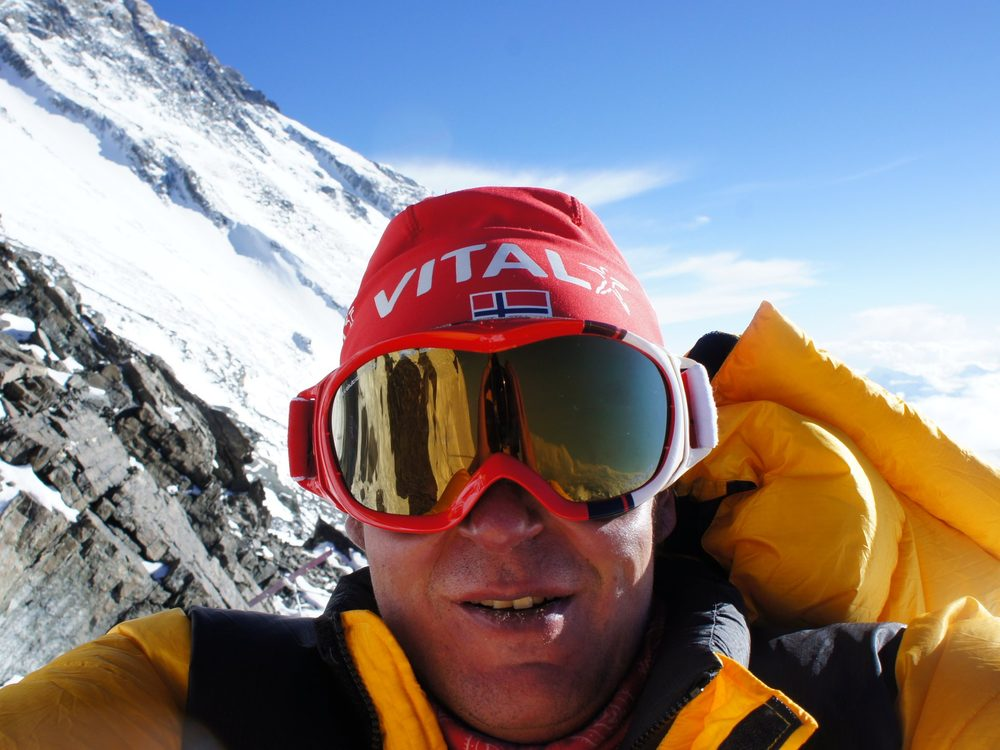

1
Steht für die kleinste mögliche Verbesserung: den einen zusätzlichen Schritt, die eine bessere Entscheidung, die eine neue Erkenntnis.
Aussergewöhnliche Ergebnisse entstehen nicht durch einzelne grosse Momente, sondern durch tausende kleine Entscheidungen. Darauf bauen wir unsere Technologie und unser Unternehmen.
Wir leben in einem Jahrhundert der Daten. Noch nie standen Menschen vor so vielen Entscheidungen, so viel Information und so viel Komplexität.
Unsere Vision: Menschen entscheiden klarer. Nicht weil Maschinen für sie denken, sondern weil Maschinen ihnen helfen, klarer zu denken. Künstliche Intelligenz ist kein Ersatz für menschliches Urteilsvermögen. Sie ist dessen Verstärker: ein stiller Partner, der Daten analysiert, Muster erkennt und Rauschen herausfiltert.
Damit der Mensch das tun kann, was Maschinen nie können: abwägen, spüren, entscheiden, verantworten.
«Der Goldmarkt ist ein Ozean. Wir schöpfen daraus Tropfen für Tropfen, mit System.»
Jeden Tag.
So viel Gold wird weltweit durchschnittlich pro Tag gehandelt: an Börsen, im ausserbörslichen Handel und über ETFs. Unser Handelskapital von rund CHF 1 Mio. entspricht davon weniger als 0,0004 %.
Durchschnitt 2025. Quelle: World Gold Council
Ein- und Ausstiege erfolgen ohne Einfluss auf den Preis, auch bei Nachrichten und hoher Volatilität.
Wir handeln gezielt kleine Ausschnitte der täglichen Kursbewegung, mit klar definiertem Ein- und Ausstieg.
Kein einzelner Trade muss alles entscheiden. Viele kleine, disziplinierte Schritte ergeben über die Zeit das Gesamtbild.
Kleine Schritte. Jeden Tag. Die Summe macht den Unterschied.
Wir befähigen Menschen durch intelligente Datenanalyse und künstliche Intelligenz, jeden Tag bessere Entscheidungen zu treffen: Chancen frühzeitig zu erkennen, Risiken besser zu verstehen und Ziele schneller zu erreichen. Finanzmärkte sind das komplexeste Entscheidungsumfeld, das Menschen je geschaffen haben. Darum beginnen wir genau dort: mit Goldcheck.
die ein Mensch allein nicht verarbeiten kann.
die Muster erkennt, die das Auge übersieht.
die den Kontext liefert, den Algorithmen nicht kennen.
Weniger Rauschen. Mehr Signal. Bessere Entscheidungen. Jeden Tag.
Steht für die kleinste mögliche Verbesserung: den einen zusätzlichen Schritt, die eine bessere Entscheidung, die eine neue Erkenntnis.
Steht für Beständigkeit. Nicht einmal pro Monat, nicht einmal pro Jahr, sondern jeden einzelnen Tag.
1 % Verbesserung pro Tag ergibt nach einem Jahr eine 37-fache Steigerung. Nicht durch Magie, sondern durch Methode.
Der Körper verändert sich nicht durch eine einzige Trainingseinheit, sondern durch Tausende. Ausdauer ist nicht Talent, sondern Entscheidung.
Kein Einzeltrade entscheidet über den Erfolg. Das System entscheidet. Wer dem Prozess vertraut, gewinnt langfristig.
Nachhaltige Unternehmen werden durch Haltung gebaut, nicht durch Hype.
Kein Produkt ist je fertig. Jede Version wird besser als die letzte.
Jedes Feature hat einen Zweck, jeder Algorithmus eine Grundlage.
Unsere Produkte stärken das Urteilsvermögen, sie ersetzen es nicht.
Wer den Prozess beherrscht, gewinnt langfristig. Wir messen und verbessern Prozesse.
Der Zinseszins der Konsequenz gilt für Wissen, Kapital und Reputation gleichermassen.
Wahre Intelligenz vereinfacht: klare Aussagen, verständliche Analysen, handlungsleitende Empfehlungen.
Das Upside kennen, das Downside begrenzen, dann entschieden handeln.

«Der Gipfel war das Ergebnis. Das Ausharren war die Leistung.»
«Grösse ist niemals das Resultat einer einzelnen, isolierten Tat. Grösse ist das stille, oft unspektakuläre Bekenntnis, heute exakt ein Prozent besser zu sein als gestern.»
«Ich habe die 1daily AG gegründet, weil die eiserne Disziplin des Bergsteigers, die Geduld des Traders und der Mut des Unternehmers im Kern identisch sind. Wir bauen Systeme, angetrieben von verlässlichen Daten und ethischer KI, die Menschen in ihren emotionalsten Momenten stützen. Wir bauen herausragende KI-Technologie, aber im Grunde unseres Herzens bauen wir Charakter.»
Ivan Schmid · Gründer, 1daily AG
Das System, das im Kleinen funktioniert, wächst mit drei Hebeln.
Dasselbe System und dieselben Regeln, nur mit mehr Kapital.
Die Technologie lässt sich auf weitere liquide Märkte übertragen.
Goldcheck wird später auch als Software für Kunden angeboten.